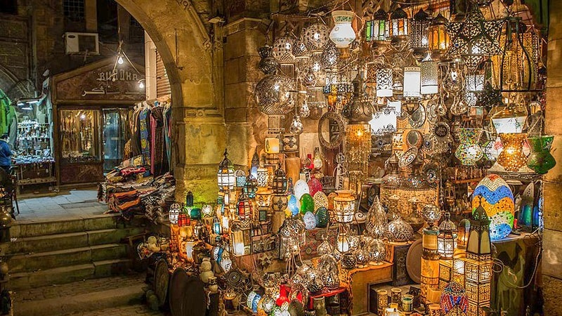
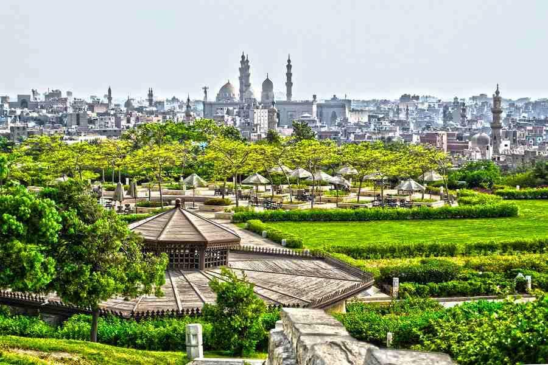
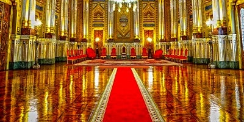
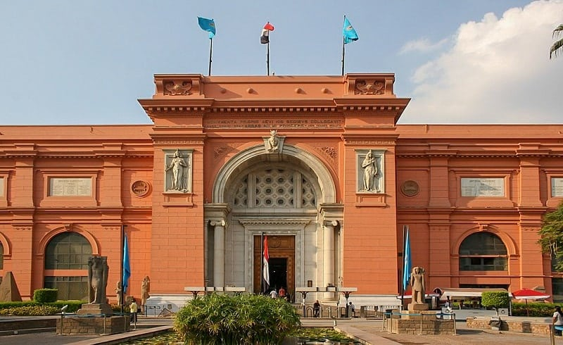
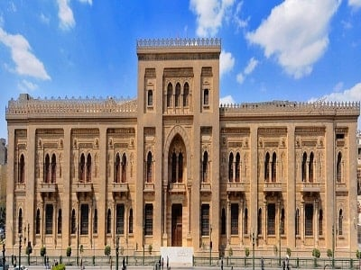
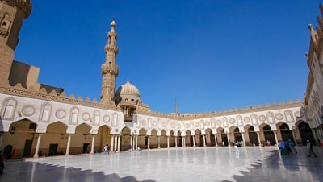
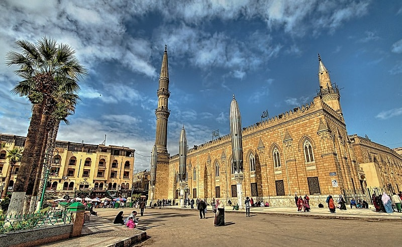

البرج من أهم الاماكن السياحية في القاهرة التي تجذب انتباه السياح إليها بفضل روعة تصميمها الذي يتخذ هيئة زهرة اللوتس المصرية الشهيرة، بالإضافة إلى ارتفاعه المهيب الذي يصل إلى 187 م، ويوفر إطلالة بانورامية رائعة على القاهرة والنيل الذي يطل عليه مبنى البرج. يُمكنك الاستمتاع بهذه الإطلالة الرائعة وأنت تتناول وجبتك في مطعم البرج الدائري في الدور 14 أو مشروبك في الكافيتريا التي تعلوه أو من خلال المرصد التلسكوبي أعلى قمته. إن كنت تتجول في منطقة الزمالك أو الجزيرة كما يدعونها ليلًا فلا تفوّت على نفسك فرصة التقاط صور فوتوغرافية لمبنى البرج من الخارج حيث يُطلق المبنى إضاءات رائعة مُتدرجة الألوان تبهر الأعين.
أسعار تذاكر الدخول إلى برج القاهرة: 25 جنيه للمصريين/ 150 جنيه للجنسيات الأخرى، تليسكوب: 5 جنيه ساعة ونصف

خان الخليلي Khan El-Khalili
من أهم مقاصد السياحة في القاهرة من قِبل السياح العرب والأجانب بل والسكان المحليين أيضًا؛ فهو سوق شعبي عريق يرجع تاريخه إلى 6 قرون مضت ويقع بالقرب من حي الحسين. يُمكنك من خلال خان الخليلي اقتناء أجمل التذكارات التي تُذكرك برحلتك إلى مصر من المشغولات الخشبية والنحاسية والفضية، التماثيل الصغيرة، القناديل الزجاجية المُضيئة، وغيرها. مع الاستمتاع بتصميم المكان المُحتفظ حتى وقتنا هذا بهيئته القديمة المُستمدة من الطراز المعماري الفاطمي. الوقت المرجح لزيارة خان الخليلي: ساعتين
من أهم مقاصد السياحة في القاهرة من قِبل السياح العرب والأجانب بل والسكان المحليين أيضًا؛ فهو سوق شعبي عريق يرجع تاريخه إلى 6 قرون مضت ويقع بالقرب من حي الحسين. يُمكنك من خلال خان الخليلي اقتناء أجمل التذكارات التي تُذكرك برحلتك إلى مصر من المشغولات الخشبية والنحاسية والفضية، التماثيل الصغيرة، القناديل الزجاجية المُضيئة، وغيرها. مع الاستمتاع بتصميم المكان المُحتفظ حتى وقتنا هذا بهيئته القديمة المُستمدة من الطراز المعماري الفاطمي. الوقت المرجح لزيارة خان الخليلي: ساعتين

حديقة الأزهر El-Azhar Park
لن يتطلب منك الأمر يومًا خاصًا لزيارة هذه الحديقة الجميلة؛ فهي ليست ببعيدة عن كثير من الأماكن السياحية في القاهرة التي تضمنها هذا المقال مثل قلعة صلاح الدين ومسجد السلطان حسن، وهي واحدة من أكبر حدائق مصر ومن أجمل معالم السياحة في القاهرة والتي سيفوتك الكثير إن لم تزرها. توفر لك الحديقة فرصة للاستمتاع بمشاهدة نحو 80 فدان من الخضرة التي تُحيط بك من كل اتجاه، نافورة كبيرة تستقبلك عند الدخول، قنوات مائية تضم نوافير صغيرة موّزعة في أرجاء مُختلفة من الحديقة، شلالات صناعية، فرص تجوال وجلسات رائعة، مطاعم ومقاهي، إلى جانب جلسات تصوير وحفلات صباحية ومسائية تُقام في المناسبات والأعراس، مما يجعلها واحدة من أفضل أماكن السهر في القاهرة وفرصة جيدة للاختلاط بعادات السكان المحليين.
أسعار تذاكر الدخول إلى حديقة الأزهر: 20 جنيه الوقت المرجح لزيارة حديقة الأزهر: 3 ساعات
لن يتطلب منك الأمر يومًا خاصًا لزيارة هذه الحديقة الجميلة؛ فهي ليست ببعيدة عن كثير من الأماكن السياحية في القاهرة التي تضمنها هذا المقال مثل قلعة صلاح الدين ومسجد السلطان حسن، وهي واحدة من أكبر حدائق مصر ومن أجمل معالم السياحة في القاهرة والتي سيفوتك الكثير إن لم تزرها. توفر لك الحديقة فرصة للاستمتاع بمشاهدة نحو 80 فدان من الخضرة التي تُحيط بك من كل اتجاه، نافورة كبيرة تستقبلك عند الدخول، قنوات مائية تضم نوافير صغيرة موّزعة في أرجاء مُختلفة من الحديقة، شلالات صناعية، فرص تجوال وجلسات رائعة، مطاعم ومقاهي، إلى جانب جلسات تصوير وحفلات صباحية ومسائية تُقام في المناسبات والأعراس، مما يجعلها واحدة من أفضل أماكن السهر في القاهرة وفرصة جيدة للاختلاط بعادات السكان المحليين.
أسعار تذاكر الدخول إلى حديقة الأزهر: 20 جنيه الوقت المرجح لزيارة حديقة الأزهر: 3 ساعات

قصر عابدين Abdeen Palace
واحد من أهم اماكن سياحية في القاهرة تستعرض تاريخ الحقبة الملكية الحديثة بدايةً من عهد الخديوي إسماعيل الذي اتخذ قرارًا ببناء القصر في الربع الأخير من القرن 19 وصولًا لانتهاء الحكم الملكي في مصر بقيام ثورة 1952. ويستعرض القصر الذي يقع في وسط القاهرة هذه الحقبة من تاريخ مصر من خلال مجموعة من المتاحف تقع في محيطه وتعرض المُقتنيات الثمينة للأسرة المالكة والأسلحة التي كانت تُستخدم في عهدهم، بالإضافة إلى مُقتنيات مُهداة من رؤساء العالم. ويتم الشرح من خلال مُرشد مُعيّن من قِبل إدارة المكان مُقابل رسوم بسيطة. وفي أثناء رحلة التنقل بين متاحف قصر عابدين المُختلفة يُمكنك إمتاع نظرك بجمال الحدائق والمساحات الخضراء الشاسعة التي تُغطي مُحيط القصر وطُرقاته الخارجية والمُصممة بما يُحاكي تاريخ عصرها.
أسعار تذاكر الدخول إلى قصر عابدين: 20 جنيه للمصريين/ 100 جنيه للجنسيات الأخرى ساعة ونصف الوقت المرجح لزيارة قصر عابدين: ساعة ونصف
واحد من أهم اماكن سياحية في القاهرة تستعرض تاريخ الحقبة الملكية الحديثة بدايةً من عهد الخديوي إسماعيل الذي اتخذ قرارًا ببناء القصر في الربع الأخير من القرن 19 وصولًا لانتهاء الحكم الملكي في مصر بقيام ثورة 1952. ويستعرض القصر الذي يقع في وسط القاهرة هذه الحقبة من تاريخ مصر من خلال مجموعة من المتاحف تقع في محيطه وتعرض المُقتنيات الثمينة للأسرة المالكة والأسلحة التي كانت تُستخدم في عهدهم، بالإضافة إلى مُقتنيات مُهداة من رؤساء العالم. ويتم الشرح من خلال مُرشد مُعيّن من قِبل إدارة المكان مُقابل رسوم بسيطة. وفي أثناء رحلة التنقل بين متاحف قصر عابدين المُختلفة يُمكنك إمتاع نظرك بجمال الحدائق والمساحات الخضراء الشاسعة التي تُغطي مُحيط القصر وطُرقاته الخارجية والمُصممة بما يُحاكي تاريخ عصرها.
أسعار تذاكر الدخول إلى قصر عابدين: 20 جنيه للمصريين/ 100 جنيه للجنسيات الأخرى ساعة ونصف الوقت المرجح لزيارة قصر عابدين: ساعة ونصف

المتحف المصري The Egyptian Museum
واحد من أهم معالم القاهرة السياحية بل ومصر عمومًا؛ فهو من أكبر متاحفها مساحة ومُقتنيات، إذ يضم المتحف العريق نحو 150 ألف قطعة تتناول تاريخ مصر الفرعوني والروماني واليوناني مُقسّمة على طابقين؛ أحدهما يحوي المُقتنيات الخفيفة كصغار التماثيل والمخطوطات والصور، والآخر يضم القطع الثقيلة كالتوابيت والمومياوات والتماثيل الضخمة. ولكن قد يتطلب منك الأمر الاستعانة بمُرشد سياحي خاص معك أو مع مجموعتك السياحية ليشرح لكم تطور الحقب التاريخية المصرية حسب ترتيبها التاريخي أو من الممكن أن تلجأ بنفسك للوحات والمُلصقات الإرشادية الموضوعة من قبل إدارة المتحف بجانب المعروضات. ومن الخارج يتمتع المتحف بتصميم معماري رائع مكسو باللون الأحمر إلى جانب قبته ونوافذه المُميّزة التي تجعله يُشبه كثيرًا معمار المباني الإسلامي.
أسعار تذاكر الدخول إلى المتحف المصري: 20 جنيه للمصريين/ 160 جنيه للجنسيات الأخرى أسعار تذاكرالدخول إلى المتحف المصري ليلاً: 30 جنيه للمصريين/ 220 جنيه للجنسيات الأخرى الوقت المرجح لزيارة المتحف المصري: ساعتين

واحد من أهم معالم القاهرة السياحية بل ومصر عمومًا؛ فهو من أكبر متاحفها مساحة ومُقتنيات، إذ يضم المتحف العريق نحو 150 ألف قطعة تتناول تاريخ مصر الفرعوني والروماني واليوناني مُقسّمة على طابقين؛ أحدهما يحوي المُقتنيات الخفيفة كصغار التماثيل والمخطوطات والصور، والآخر يضم القطع الثقيلة كالتوابيت والمومياوات والتماثيل الضخمة. ولكن قد يتطلب منك الأمر الاستعانة بمُرشد سياحي خاص معك أو مع مجموعتك السياحية ليشرح لكم تطور الحقب التاريخية المصرية حسب ترتيبها التاريخي أو من الممكن أن تلجأ بنفسك للوحات والمُلصقات الإرشادية الموضوعة من قبل إدارة المتحف بجانب المعروضات. ومن الخارج يتمتع المتحف بتصميم معماري رائع مكسو باللون الأحمر إلى جانب قبته ونوافذه المُميّزة التي تجعله يُشبه كثيرًا معمار المباني الإسلامي.
أسعار تذاكر الدخول إلى المتحف المصري: 20 جنيه للمصريين/ 160 جنيه للجنسيات الأخرى أسعار تذاكرالدخول إلى المتحف المصري ليلاً: 30 جنيه للمصريين/ 220 جنيه للجنسيات الأخرى الوقت المرجح لزيارة المتحف المصري: ساعتين
متحف الفن الإسلامي The Museum of Islamic Art
يقع متحف الفن الإسلامي في منطقة باب الخلق وهو أحد أهم معالم السياحة في القاهرة ومن أكبر المتاحف الإسلامية في العالم التي تُحاكي حقبة الحكم الإسلامي لمصر. فإلى جانب تصميمه المعماري المُميّز والأخاذ الذي يُحاكي تاريخ الفترة التي يتناولها، يُمكنك الاستمتاع بمُشاهدة آلاف التحف الفنية التي يعود تاريخها للعصر الإسلامي من أواني زجاجية ومعدنية، قطع أثاث، أحجار قيمة، مُعدات كتابة الرسائل، مخطوطات، مع معلومات تُقدّم لك عما تراه نصب عينيك باللغتين العربية والإنجليزية كما أنه يوفر ركنًا للأطفال.
أسعار تذاكر الدخول إلى متحف الفن الإسلامي: 10 جنيه للمصريين/ 100 جنيه للجنسيات الأخرى الوقت المرجح لزيارة متحف الفن الإسلامي: ساعتين
يقع متحف الفن الإسلامي في منطقة باب الخلق وهو أحد أهم معالم السياحة في القاهرة ومن أكبر المتاحف الإسلامية في العالم التي تُحاكي حقبة الحكم الإسلامي لمصر. فإلى جانب تصميمه المعماري المُميّز والأخاذ الذي يُحاكي تاريخ الفترة التي يتناولها، يُمكنك الاستمتاع بمُشاهدة آلاف التحف الفنية التي يعود تاريخها للعصر الإسلامي من أواني زجاجية ومعدنية، قطع أثاث، أحجار قيمة، مُعدات كتابة الرسائل، مخطوطات، مع معلومات تُقدّم لك عما تراه نصب عينيك باللغتين العربية والإنجليزية كما أنه يوفر ركنًا للأطفال.
أسعار تذاكر الدخول إلى متحف الفن الإسلامي: 10 جنيه للمصريين/ 100 جنيه للجنسيات الأخرى الوقت المرجح لزيارة متحف الفن الإسلامي: ساعتين

الجامع الأزهر El-Azhar Mosque
القاهرة الدينية ليس فقط على مستوى العبادة والروحانية ولكن على مستوى دراسة العلوم الشرعية وعلى مستوى العالم لأكثر من ألف عام. إلى جانب ذلك يُمثّل الجامع الأزهر للسائح الأجنبي تُحفة معمارية لا تُفوَّت من خلال مآذنه الثلاثة التي ترجع إلى القرون 14- 16 ميلادية وساحته الواسعة الرحبة التي تعود لتاريخ أقدم.
الوقت المرجح لزيارة الجامع الأزهر: ساعة
القاهرة الدينية ليس فقط على مستوى العبادة والروحانية ولكن على مستوى دراسة العلوم الشرعية وعلى مستوى العالم لأكثر من ألف عام. إلى جانب ذلك يُمثّل الجامع الأزهر للسائح الأجنبي تُحفة معمارية لا تُفوَّت من خلال مآذنه الثلاثة التي ترجع إلى القرون 14- 16 ميلادية وساحته الواسعة الرحبة التي تعود لتاريخ أقدم.
الوقت المرجح لزيارة الجامع الأزهر: ساعة

مسجد الحسين Mosque of El-Hussein
إن كنت قد زرت الجامع الأزهر لتوك، فلا داعٍ لتذهب بعيدًا، فعلى بعد خطواتٍ بسيطة يقع اثنين من أهم وأشهر معالم السياحة في القاهرة ألا وهما مسجد الحسين وشارع خان الخليلي. وترجع شهرة المسجد الذي يتمتع بقدسية وروحانية عالية خاصةً لدى سكان المدينة إلى الاعتقاد بأن رأس الإمام الحسين بن على حفيد النبي محمد مدفون أسفله. ويتمتع المسجد العريق الذي يرجع تاريخ بنائه للعهد الفاطمي بتصميم معماري مُتميّز يجمع بين طرازين، فالتصميم العام مُستمَّد من العمارة القوطية، والمآذن الأسطوانية ذات المخاريط من العمارة العثمانية، هذا إلى جانب استخدام الرخام الأبيض في بناء أعمدة المسجد من الداخل وأبوابه الثلاثة التي يؤدي إحداها لشارع خان الخليلي الشهير. وفي المساء وبالتحديد خلال شهر رمضان الكريم يتحول مُحيط المسجد لواحد من أفضل أماكن السهر في القاهرة حيث المطاعم والمقاهي الشعبية وأجوائها المُختلفة التي تُعد تجربة جديدة مُميّزة للكثيرين لن تعيشها إلا أثناء السياحة في القاهرة.
الوقت المرجح لزيارة مسجد الحسين: ساعة
إن كنت قد زرت الجامع الأزهر لتوك، فلا داعٍ لتذهب بعيدًا، فعلى بعد خطواتٍ بسيطة يقع اثنين من أهم وأشهر معالم السياحة في القاهرة ألا وهما مسجد الحسين وشارع خان الخليلي. وترجع شهرة المسجد الذي يتمتع بقدسية وروحانية عالية خاصةً لدى سكان المدينة إلى الاعتقاد بأن رأس الإمام الحسين بن على حفيد النبي محمد مدفون أسفله. ويتمتع المسجد العريق الذي يرجع تاريخ بنائه للعهد الفاطمي بتصميم معماري مُتميّز يجمع بين طرازين، فالتصميم العام مُستمَّد من العمارة القوطية، والمآذن الأسطوانية ذات المخاريط من العمارة العثمانية، هذا إلى جانب استخدام الرخام الأبيض في بناء أعمدة المسجد من الداخل وأبوابه الثلاثة التي يؤدي إحداها لشارع خان الخليلي الشهير. وفي المساء وبالتحديد خلال شهر رمضان الكريم يتحول مُحيط المسجد لواحد من أفضل أماكن السهر في القاهرة حيث المطاعم والمقاهي الشعبية وأجوائها المُختلفة التي تُعد تجربة جديدة مُميّزة للكثيرين لن تعيشها إلا أثناء السياحة في القاهرة.
الوقت المرجح لزيارة مسجد الحسين: ساعة